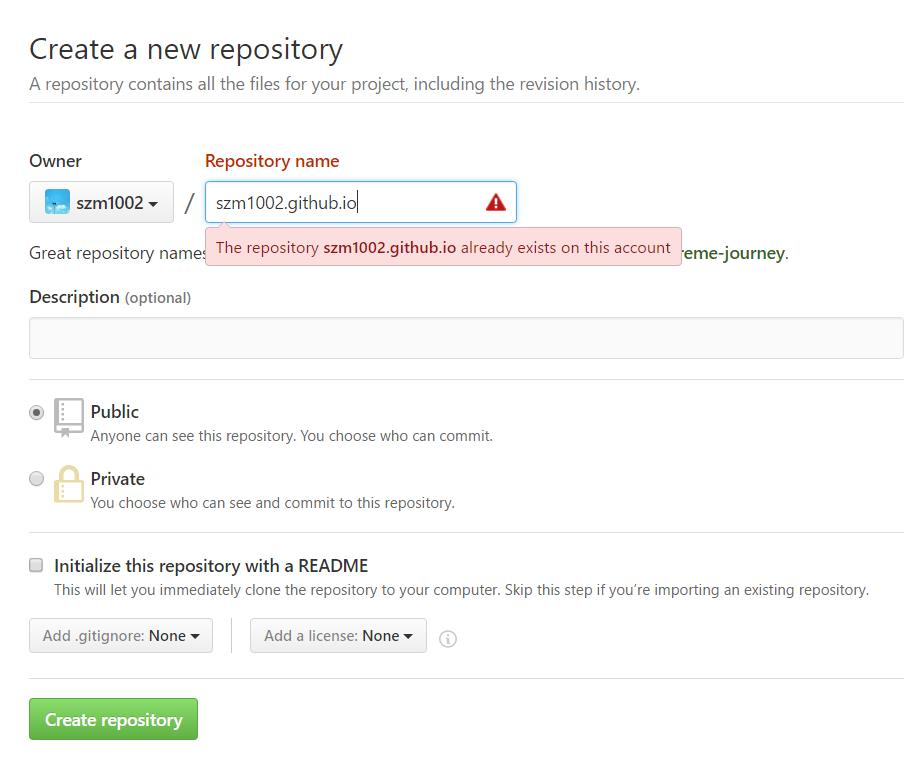

本文主要记载了笔者在Window下一步步搭建博客的过程，主要用到了GitHub Pages与Hexo，域名绑定不是必须的，读者可自行取舍。在Mac下搭建博客的步骤应该也是一样的。
GitHub是世界上最大的代码存放网站和开源社区。而github Pages可以被认为是用户编写的、托管在github上的静态网页。免费稳定，用它来放博客，最合适不过了。
首先你需要有一个GitHub账号，然后只要创建一个repository就行了。但是这个仓库是有规则的，其名字格式必须为：yourusername.github.io。创建好之后，这个仓库就是你的GitHub Pages了。

仓库命名格式中的
yourusername是你的github用户名。笔者的github用户名是szm1002。所以仓库命名格式则是szm1002.github.io。
Hexo是一个快速、简洁且高效的博客框架。Hexo 使用 Markdown（或其他渲染引擎）解析文章，在几秒内，即可利用靓丽的主题生成静态网页。在安装Hexo之前，需要先安装Node.js以及Git。
可以到它的官网下载适合自己电脑系统的版本进行安装即可，推荐更稳定的LTS版本。笔者选择的是LTS的.msi文件进行安装（Windows 64-bit）。
sudo apt-get install git-coresudo yum install git-coreNode.js和Hexo安装完毕后，终于可以安装Hexo啦！
打开Git Bash，输入以下命令即可完成安装。
|
|
|
|
More info: Writing
|
|
More info: Server
|
|
More info: Generating
|
|
More info: Deployment
]]>